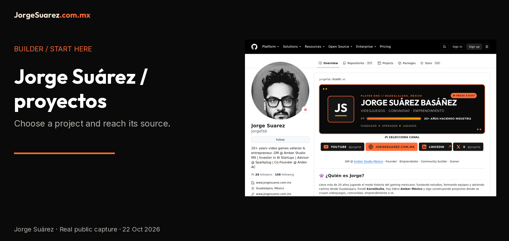

Español | English

Jorge Suárez · projects to explore
Start with a project, not a tool installation. Open Master Prompt Builder to prepare AI context, or Game Industry Resources to explore game industry resources.
What is it?
This profile is a builder's index of Jorge Suárez's projects and links. It is not an application, an agent service or a platform with its own accounts.
Who is it for?
People who want to discover projects, explore game industry resources or find the right repository before asking for technical help.
Why does it exist?
To provide a clear entry point into public work and distinguish tools, proposals and references. The previous README describes the intersection of games, community, entrepreneurship and AI; this guide turns that into entry paths without inventing outcomes.
How do I use it?
Choose a path and open its main README, the project's published reference. This family's new documentation is a local proposal: these links do not imply it has already been merged.
| I want to… |
Open |
Scope |
| Prepare context for AI |
Master Prompt Builder |
Context building and export tool. |
| Explore game industry resources |
Game Industry Resources |
Resource directory. |
| Visit the personal site |
jorgesuarez.com.mx · site |
Public story, projects and links. |
| Discover a learning proposal |
EchoMentor AI · landing |
A public landing does not demonstrate the private app; UETC / Arden retain their identity. |
| Explore a small-business proposal |
SparkCrew |
Proposal presentation, not evidence of a purchased service. |
Companies and the reference library are separate
Amber, Sparkplug, Arden / UETC and Tecni Moto retain their own brands. This personal signature does not replace them or turn their products into personal software. The previous profile mentions them; no clients, new roles, figures or business promises are added here.
Repositories labeled Fork on GitHub are third-party references: check the original repository and license. They are not presented as original work. Historical counts from the previous profile are not current metrics.
When should or shouldn't I use it?
Use it to choose a project and reach its source. It does not automatically purchase services, manage accounts, run agents or verify a private app's availability.
Where can I find it?
Public profile · Personal site · Official brandkit.
Before continuing
- Availability: public index; real capture from 22 October 2026. Not an installable release.
- Requirements and technical help: a browser for reading; linked tools have their own requirements. Library integration may need a developer or agent.
- Cost and licensing: reading this index requires no payment; external services may charge. This repository does not declare an open license for reusing all its content. Brand artwork is not MIT.
- Privacy: this README has no form of its own; GitHub and external destinations have their own policies. Never post passwords or customer data in issues.
- Limitations: links do not guarantee that products or betas are open. The recording shows the previously published profile, not this proposal already published.
- Help: Jorge's public email; tool-specific problems belong in that tool's repository.
Look before deciding

Capture of the published profile, not an application mockup. Video and English captions · Subtítulos ES.
For documentation maintainers
Documentation guide · Media notice. No clone is needed to explore the index. Technical evidence is in reports/docs-brandkit-verification.json.